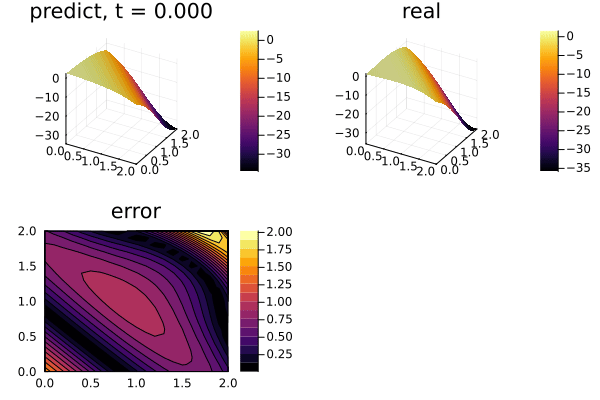

Using GPUs to train Physics-Informed Neural Networks (PINNs)
the 2-dimensional PDE:
\[∂_t u(x, y, t) = ∂^2_x u(x, y, t) + ∂^2_y u(x, y, t) \, ,\]
with the initial and boundary conditions:
\[\begin{align*} u(x, y, 0) &= e^{x+y} \cos(x + y) \, ,\\ u(0, y, t) &= e^{y} \cos(y + 4t) \, ,\\ u(2, y, t) &= e^{2+y} \cos(2 + y + 4t) \, ,\\ u(x, 0, t) &= e^{x} \cos(x + 4t) \, ,\\ u(x, 2, t) &= e^{x+2} \cos(x + 2 + 4t) \, , \end{align*}\]
on the space and time domain:
\[x \in [0, 2] \, ,\ y \in [0, 2] \, , \ t \in [0, 2] \, ,\]
with physics-informed neural networks. The only major difference from the CPU case is that we must ensure that our initial parameters for the neural network are on the GPU. If that is done, then the internal computations will all take place on the GPU. This is done by using the gpu function on the initial parameters, like:
using Lux, LuxCUDA, ComponentArrays, Random
const gpud = gpu_device()
inner = 25
chain = Chain(Dense(3, inner, σ), Dense(inner, inner, σ), Dense(inner, inner, σ),
Dense(inner, inner, σ), Dense(inner, 1))
ps = Lux.setup(Random.default_rng(), chain)[1]
ps = ps |> ComponentArray |> gpud .|> Float64ComponentArrays.ComponentVector{Float64, CUDA.CuArray{Float64, 1, CUDA.DeviceMemory}, Tuple{ComponentArrays.Axis{(layer_1 = ViewAxis(1:100, Axis(weight = ViewAxis(1:75, ShapedAxis((25, 3))), bias = ViewAxis(76:100, Shaped1DAxis((25,))))), layer_2 = ViewAxis(101:750, Axis(weight = ViewAxis(1:625, ShapedAxis((25, 25))), bias = ViewAxis(626:650, Shaped1DAxis((25,))))), layer_3 = ViewAxis(751:1400, Axis(weight = ViewAxis(1:625, ShapedAxis((25, 25))), bias = ViewAxis(626:650, Shaped1DAxis((25,))))), layer_4 = ViewAxis(1401:2050, Axis(weight = ViewAxis(1:625, ShapedAxis((25, 25))), bias = ViewAxis(626:650, Shaped1DAxis((25,))))), layer_5 = ViewAxis(2051:2076, Axis(weight = ViewAxis(1:25, ShapedAxis((1, 25))), bias = ViewAxis(26:26, Shaped1DAxis((1,))))))}}}(layer_1 = (weight = [0.49842238426208496 -0.9355485439300537 0.5794739723205566; 0.028414130210876465 0.10795068740844727 0.8837155103683472; … ; 0.9750144481658936 -0.7845910787582397 0.8271178007125854; 0.44841909408569336 -0.2597489356994629 0.3214457035064697], bias = [-0.44955649971961975, -0.30966031551361084, -0.07376828789710999, -0.052212826907634735, 0.11080928891897202, -0.349040687084198, 0.31225165724754333, 0.47094637155532837, 0.2382282316684723, 0.4422939717769623 … 0.04296811297535896, 0.14919134974479675, -0.09446467459201813, -0.0838329866528511, 0.03149668872356415, 0.152948260307312, 0.3091699182987213, -0.1263887733221054, -0.1380060315132141, 0.49920791387557983]), layer_2 = (weight = [0.22649449110031128 -0.15352600812911987 … -0.08942040801048279 0.26996147632598877; -0.18388289213180542 -0.1115928515791893 … -0.2133386731147766 -0.25882387161254883; … ; 0.061138737946748734 -0.054946836084127426 … 0.057937316596508026 -0.04750186949968338; -0.14760619401931763 0.17744196951389313 … 0.19096285104751587 0.20289404690265656], bias = [0.03899242728948593, -0.07629239559173584, -0.18232131004333496, -0.10945074260234833, -0.1166391372680664, -0.02447364293038845, -0.11308634281158447, 0.05704670026898384, 0.10189485549926758, 0.10139565169811249 … 0.1286163032054901, -0.11930470168590546, -0.1985284835100174, 0.1550571173429489, -0.10062003135681152, -0.1940436065196991, 0.18260185420513153, -0.051006220281124115, -0.04842841625213623, -0.18318673968315125]), layer_3 = (weight = [0.2937278747558594 -0.23528625071048737 … -0.251400351524353 -0.09211703389883041; 0.19859178364276886 0.27176621556282043 … 0.14767569303512573 0.32647085189819336; … ; 0.01790824718773365 0.0037555606104433537 … 0.23107293248176575 -0.3447030782699585; 0.02389916405081749 0.08383682370185852 … 0.08300096541643143 0.29574400186538696], bias = [-0.07798969745635986, -0.09271419048309326, 0.09760098159313202, 0.11411885917186737, -0.022686075419187546, 0.10096444934606552, 0.12131736427545547, 0.16514138877391815, -0.1819738894701004, -0.04285097122192383 … -0.08369889110326767, -0.1468459814786911, -0.16163179278373718, -0.18560448288917542, 0.12665560841560364, -0.03112809732556343, -0.14803585410118103, -0.055007003247737885, 0.0627349391579628, 0.12303731590509415]), layer_4 = (weight = [-0.3398875296115875 0.18800519406795502 … 0.04361969605088234 0.16852925717830658; 0.18459081649780273 -0.203340083360672 … 0.2550578713417053 0.07370506227016449; … ; 0.22435910999774933 -0.13371160626411438 … -0.3261670768260956 0.0978192538022995; -0.23235784471035004 -0.3144274055957794 … 0.330956369638443 -0.03565498813986778], bias = [0.09163282066583633, -0.04241890832781792, -0.16763094067573547, -0.091822050511837, -0.1775994747877121, 0.03777496889233589, 0.1638389527797699, -0.1937521994113922, 0.04138682037591934, -0.1816103160381317 … 0.17917945981025696, 0.09553472697734833, 0.10942284762859344, 0.05739862844347954, 0.0682360902428627, 0.16799966990947723, -0.19580093026161194, -0.17553696036338806, -0.055461335927248, -0.12474198639392853]), layer_5 = (weight = [0.3021925389766693 -0.2627195119857788 … -0.3434959352016449 0.15916620194911957], bias = [-0.0024287463165819645]))In total, this looks like:
using NeuralPDE, Lux, LuxCUDA, Random, ComponentArrays
using Optimization
using OptimizationOptimisers
import DomainSets: Interval
using IntervalSets: leftendpoint, rightendpoint
using Plots
using Printf
@parameters t x y
@variables u(..)
Dxx = Differential(x)^2
Dyy = Differential(y)^2
Dt = Differential(t)
t_min = 0.0
t_max = 2.0
x_min = 0.0
x_max = 2.0
y_min = 0.0
y_max = 2.0
# 2D PDE
eq = Dt(u(t, x, y)) ~ Dxx(u(t, x, y)) + Dyy(u(t, x, y))
analytic_sol_func(t, x, y) = exp(x + y) * cos(x + y + 4t)
# Initial and boundary conditions
bcs = [u(t_min, x, y) ~ analytic_sol_func(t_min, x, y),
u(t, x_min, y) ~ analytic_sol_func(t, x_min, y),
u(t, x_max, y) ~ analytic_sol_func(t, x_max, y),
u(t, x, y_min) ~ analytic_sol_func(t, x, y_min),
u(t, x, y_max) ~ analytic_sol_func(t, x, y_max)]
# Space and time domains
domains = [t ∈ Interval(t_min, t_max),
x ∈ Interval(x_min, x_max),
y ∈ Interval(y_min, y_max)]
# Neural network
inner = 25
chain = Chain(Dense(3, inner, σ), Dense(inner, inner, σ), Dense(inner, inner, σ),
Dense(inner, inner, σ), Dense(inner, 1))
strategy = QuasiRandomTraining(100)
ps = Lux.setup(Random.default_rng(), chain)[1]
ps = ps |> ComponentArray |> gpud .|> Float64
discretization = PhysicsInformedNN(chain, strategy; init_params = ps)
@named pde_system = PDESystem(eq, bcs, domains, [t, x, y], [u(t, x, y)])
prob = discretize(pde_system, discretization)
symprob = symbolic_discretize(pde_system, discretization)
callback = function (p, l)
println("Current loss is: $l")
return false
end
res = Optimization.solve(prob, OptimizationOptimisers.Adam(1e-2); maxiters = 2500)retcode: Default
u: ComponentArrays.ComponentVector{Float64, CUDA.CuArray{Float64, 1, CUDA.DeviceMemory}, Tuple{ComponentArrays.Axis{(layer_1 = ViewAxis(1:100, Axis(weight = ViewAxis(1:75, ShapedAxis((25, 3))), bias = ViewAxis(76:100, Shaped1DAxis((25,))))), layer_2 = ViewAxis(101:750, Axis(weight = ViewAxis(1:625, ShapedAxis((25, 25))), bias = ViewAxis(626:650, Shaped1DAxis((25,))))), layer_3 = ViewAxis(751:1400, Axis(weight = ViewAxis(1:625, ShapedAxis((25, 25))), bias = ViewAxis(626:650, Shaped1DAxis((25,))))), layer_4 = ViewAxis(1401:2050, Axis(weight = ViewAxis(1:625, ShapedAxis((25, 25))), bias = ViewAxis(626:650, Shaped1DAxis((25,))))), layer_5 = ViewAxis(2051:2076, Axis(weight = ViewAxis(1:25, ShapedAxis((1, 25))), bias = ViewAxis(26:26, Shaped1DAxis((1,))))))}}}(layer_1 = (weight = [-1.692862800719648 -0.5073321418919157 -0.478825825376574; -1.1701242779752512 -0.8195135673357098 -0.8449050960755065; … ; 2.73103346348773 -0.1493532543480014 -0.23604857299050383; -2.127690941531992 -0.5692065048440891 -0.4929475203344146], bias = [0.6461474678442539, 1.9227570964669063, 0.647913457233002, 0.034057654166591955, 0.7533860794778524, 0.7991994156465207, -2.9684091898409326, 1.4854361267558058, 1.3888823056783681, -1.4433761882459966 … 1.1808974985281069, -1.0696569965063774, 0.6088445892849633, 0.4993631469032345, 1.0938218072127939, -1.109873563778489, 0.3547089970191669, 1.1220274281169687, -0.8839703167269091, 0.6330386589741561]), layer_2 = (weight = [0.6125817483860639 0.9742363562157106 … -0.6166058502015257 0.7610822514621934; -0.5709563044959509 -2.02135686860345 … 0.16828667402943598 -1.4189232702206542; … ; 0.9281665843254343 1.9240349877525815 … 1.1316932383613583 0.9987215446055862; -0.02173893140320929 0.9330471367733173 … -0.38320935172963083 0.617180266167796], bias = [-0.087055540536481, 0.3238747589537478, 0.011210753690481828, -0.25771471775144855, -0.08242552674567602, 0.0708878947936814, -0.24633232567907218, 0.1915302931915212, -0.3256481007447004, 0.08888454724544448 … 0.5585160482203075, -0.13313646226126027, -0.27006504264877373, 0.1467875352644896, 0.2896463181852404, 0.6467408722812873, -0.35859954980801767, 0.06762690849654425, 0.10476964381319302, -0.1475020159882908]), layer_3 = (weight = [-0.19032178691518548 1.285042424651768 … -1.2105652161211493 -0.07665930584934393; -0.47543222674997454 -0.9388171572796221 … 0.6743201535038988 -0.5830930261460973; … ; -1.0266558023936334 -0.8380271421890217 … 0.11249008997542646 -1.4539881673914246; -0.6081236416063981 -1.2157953382895457 … 0.4349047531759468 -0.4042487460743832], bias = [0.010047444373499838, -0.3049891034450236, -0.06520871427953116, -0.17926844216701204, 0.35332698296419607, -0.6274279963636957, 0.19690110113529896, -0.0420922905906399, -0.15701547214838207, -0.1967876925243973 … -0.21319494326188912, -0.06861139564990154, -0.14042374721593473, -0.09227602839695341, -0.4597640253600615, -0.15595323979331827, 0.1480574488187309, 0.14573529944993008, -0.7655783988428977, -0.3356517449992086]), layer_4 = (weight = [-1.302490760986625 -0.4647865888599119 … 4.410281657930933 0.34830878891854367; -1.6022557373663187 1.2287381592756788 … 1.0527549658951605 0.8438715309422247; … ; 1.329615227094487 -1.3246194898532015 … -1.764667999132989 -0.9552452609447403; -1.5361113912563862 1.3548760290809931 … 0.7655276005720796 1.0295270404961125], bias = [-0.8178983536621408, -0.053521783520590886, -0.1707036475790469, 0.41030125367462283, 0.018922578590790252, 0.12113157534171107, -0.07425179618268403, 0.40379418533400074, 0.5126316108610094, 0.49356137689618323 … 0.19561373825797457, -0.5343386675668939, 0.019233382627957193, 0.45110447935889736, -0.5058496259019467, -0.048322450757539756, -0.319734074354677, 0.12876391610469365, 0.43898473465242493, -0.3622840878402803]), layer_5 = (weight = [-3.567272350139148 -2.806121005254419 … 8.235673665721512 -2.476588372314632], bias = [2.7235153382048587]))We then use the remake function to rebuild the PDE problem to start a new optimization at the optimized parameters, and continue with a lower learning rate:
prob = remake(prob, u0 = res.u)
res = Optimization.solve(
prob, OptimizationOptimisers.Adam(1e-3); callback = callback, maxiters = 2500)retcode: Default
u: ComponentArrays.ComponentVector{Float64, CUDA.CuArray{Float64, 1, CUDA.DeviceMemory}, Tuple{ComponentArrays.Axis{(layer_1 = ViewAxis(1:100, Axis(weight = ViewAxis(1:75, ShapedAxis((25, 3))), bias = ViewAxis(76:100, Shaped1DAxis((25,))))), layer_2 = ViewAxis(101:750, Axis(weight = ViewAxis(1:625, ShapedAxis((25, 25))), bias = ViewAxis(626:650, Shaped1DAxis((25,))))), layer_3 = ViewAxis(751:1400, Axis(weight = ViewAxis(1:625, ShapedAxis((25, 25))), bias = ViewAxis(626:650, Shaped1DAxis((25,))))), layer_4 = ViewAxis(1401:2050, Axis(weight = ViewAxis(1:625, ShapedAxis((25, 25))), bias = ViewAxis(626:650, Shaped1DAxis((25,))))), layer_5 = ViewAxis(2051:2076, Axis(weight = ViewAxis(1:25, ShapedAxis((1, 25))), bias = ViewAxis(26:26, Shaped1DAxis((1,))))))}}}(layer_1 = (weight = [-1.766078892542278 -0.503637502656151 -0.48124624868073607; -1.2091084702959074 -0.8465921419426601 -0.876048781705473; … ; 2.8571715814303893 -0.13834329268069376 -0.23840552256448946; -2.195674441041817 -0.5333753650372998 -0.4815679899832155], bias = [0.6631125127549334, 1.9475761760876162, 0.5703842289854757, -0.03190315811437324, 0.7661960813035785, 0.8147384312769785, -2.983734912940531, 1.5058970399264968, 1.425547938532117, -1.4036922613477283 … 1.2219720998574857, -1.0983468947838182, 0.5260525538420342, 0.4861443054810263, 1.1452139789940556, -1.0266105526343736, 0.3459497526196766, 1.124159878268431, -0.8659968414539844, 0.6730596079679962]), layer_2 = (weight = [0.6838257640350023 1.1632660271351476 … -0.6416125661016038 0.8349986460255328; -0.5675288616286145 -2.0171885198453863 … 0.17802186467321815 -1.3747874109394813; … ; 0.9351581766663896 1.943791768475991 … 1.1005813087900949 1.0102756885231676; -0.06898194562236462 0.8742755316520159 … -0.38954062659231026 0.6120944577450403], bias = [-0.09940281547656266, 0.3275064045116908, 0.014348035925612805, -0.1940313864114305, -0.10440079250377103, 0.06972211580620118, -0.23206690397676352, 0.1961304881965801, -0.30403258457301996, 0.07884729469926838 … 0.5334302858833794, -0.1528097482199169, -0.27555821144233267, 0.11873414280983884, 0.28372908667890306, 0.6431972349158979, -0.3476078947842833, 0.08249524728693801, 0.07622877967426216, -0.17179122039071015]), layer_3 = (weight = [-0.20186277221016813 1.3207827225650302 … -1.2021930303984125 -0.08730516552847258; -0.5064639808341223 -0.9281334807850335 … 0.6769204269381434 -0.5692531585018135; … ; -0.9460638986195125 -0.7335054403811915 … 0.22727467734107396 -1.3457811317954933; -0.5788365588395312 -1.229565950442011 … 0.44223671428424044 -0.4400495082507716], bias = [0.02380099324280458, -0.30494999700783837, -0.058182081762007905, -0.17292991699161456, 0.3699897631225315, -0.6183965208949648, 0.20345679111306045, -0.031040812590355113, -0.1908736412941905, -0.19943966661453588 … -0.22376653199602534, -0.06283131123638953, -0.11700873487448155, -0.11311984464436382, -0.4543876633503572, -0.14735071781686235, 0.1620843167056835, 0.16414126060643178, -0.6605387834336779, -0.3274172204166317]), layer_4 = (weight = [-1.2167989899237774 -0.23552524945587666 … 4.707819811798848 0.6323748047692783; -1.8040818020557692 1.2832068459002897 … 0.8060246194573795 0.7558213908277402; … ; 1.1705423190679556 -1.4711930553766461 … -2.0147994374579548 -1.25761375754428; -1.7909283610628342 1.371667631512319 … 0.44026094704466556 0.8870351355133582], bias = [-0.7184902381908326, -0.11073903743491981, -0.1269988732909777, 0.494158552232943, -0.0688961667422847, 0.2002444850473553, -0.1330021207376095, 0.4411584579748595, 0.5636842059925307, 0.6345431430303516 … 0.282728869425439, -0.6009784460507902, 0.09613350073709326, 0.443095336902216, -0.5091606020299325, 0.010238543061859387, -0.367291162876838, 0.21723349949269524, 0.3718556790114465, -0.4398115407885675]), layer_5 = (weight = [-3.882647748130141 -2.962166192264404 … 9.139270467127742 -2.6400285979376212], bias = [2.9597961587663844]))Finally, we inspect the solution:
phi = discretization.phi
ts, xs, ys = [leftendpoint(d.domain):0.1:rightendpoint(d.domain) for d in domains]
u_real = [analytic_sol_func(t, x, y) for t in ts for x in xs for y in ys]
u_predict = [first(Array(phi([t, x, y], res.u))) for t in ts for x in xs for y in ys]
function plot_(res)
# Animate
anim = @animate for (i, t) in enumerate(0:0.05:t_max)
@info "Animating frame $i..."
u_real = reshape([analytic_sol_func(t, x, y) for x in xs for y in ys],
(length(xs), length(ys)))
u_predict = reshape([Array(phi([t, x, y], res.u))[1] for x in xs for y in ys],
length(xs), length(ys))
u_error = abs.(u_predict .- u_real)
title = @sprintf("predict, t = %.3f", t)
p1 = plot(xs, ys, u_predict, st = :surface, label = "", title = title)
title = @sprintf("real")
p2 = plot(xs, ys, u_real, st = :surface, label = "", title = title)
title = @sprintf("error")
p3 = plot(xs, ys, u_error, st = :contourf, label = "", title = title)
plot(p1, p2, p3)
end
gif(anim, "3pde.gif", fps = 10)
end
plot_(res)
Performance benchmarks
Here are some performance benchmarks for 2d-pde with various number of input points and the number of neurons in the hidden layer, measuring the time for 100 iterations. Comparing runtime with GPU and CPU.
julia> CUDA.device()